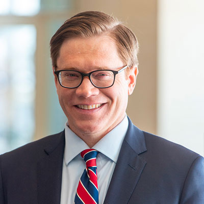

<div class="container">
	<div class="row">
        <div id="speaker-detail" class="col-lg-10 col-lg-offset-1">
            <div class="row">
            	<button title="Close (Esc)" type="button" class="mfp-close">×</button>
                
                <div class="col-md-5 col-lg-5 no-padding">
                    
                </div>
                    
                <div class="col-md-7 col-lg-7">
                    <h2>David <span>Toland</span></h2>
                    <p class="lead">Kansas Lt. Gov</p>
                    <!--
                    <ul class="social list-inline list-unstyled">
                    	<li><a href=""><i class="fa fa-2x fa-facebook-square"></i></a></li>
                        <li><a href=""><i class="fa fa-2x fa-twitter-square"></i></a></li>
                        <li><a href=""><i class="fa fa-2x fa-google-plus-square"></i></a></li>
                        <li><a href=""><i class="fa fa-2x fa-linkedin-square"></i></a></li>
                    </ul>
                    -->
                    
                    <div id="content">
                    	<p>David Toland was sworn in as Lieutenant Governor of Kansas on January 4, 2021.</p>

                        <p>David Toland is the 52nd Lieutenant Governor of the State of Kansas and also serves as Secretary of the Kansas Department of Commerce. A seventh-generation Kansan, Toland was appointed Secretary of Commerce by Governor Laura Kelly in January 2019 and Lieutenant Governor in January 2021.</p>

                        <p>As Secretary of Commerce Toland has overseen sweeping changes within the state’s lead economic development agency. Under his leadership, the Department has rebuilt its in-state, domestic, and international business recruitment teams; launched the state’s Office of Broadband Development; re-established a Community Development division and the Kansas Main Street Program; and launched the state’s first new economic development strategic planning process since 1986. Toland and his team have been at the forefront of Governor Kelly’s efforts to support the state’s economic recovery from the COVID-19 pandemic, providing technical and financial assistance to thousands of small businesses. He also led negotiations on behalf of Governor Kelly that resulted in the end of the incentives “Border War” that raged between Kansas and Missouri for a decade. These efforts have resulted in over $2.5 billion in new capital investment by businesses in Kansas in 2020, an increase of nearly 80% over the previous year and the highest in state history.</p>

                        <p>Prior to joining the team at Commerce, Secretary Toland was the first CEO of Thrive Allen County, a nonprofit coalition that works to improve quality of life and economic conditions in Allen County, Kansas. A seventh-generation Allen Countian, Toland oversaw the organization in its efforts toward improving economic conditions, healthcare access, and quality of life in the small, rural Kansas county.</p>

                        <p>Prior to his return to his hometown to lead Thrive Allen County, Toland worked as an appointee of Washington, D.C. Mayor Anthony A. Williams, holding key leadership positions in the D.C. economic development and planning offices. He holds both Bachelor's and Master's degrees from the University of Kansas.</p>

                        <p>Toland and his wife, Beth, an Early Childhood Education Specialist at Allen Community College, were married in 2001 and have two children.</p>
                    </div>
                </div>
            
            </div>
        </div>
    </div>
</div>